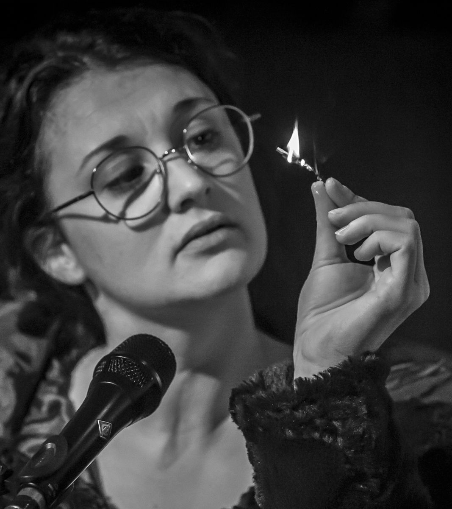
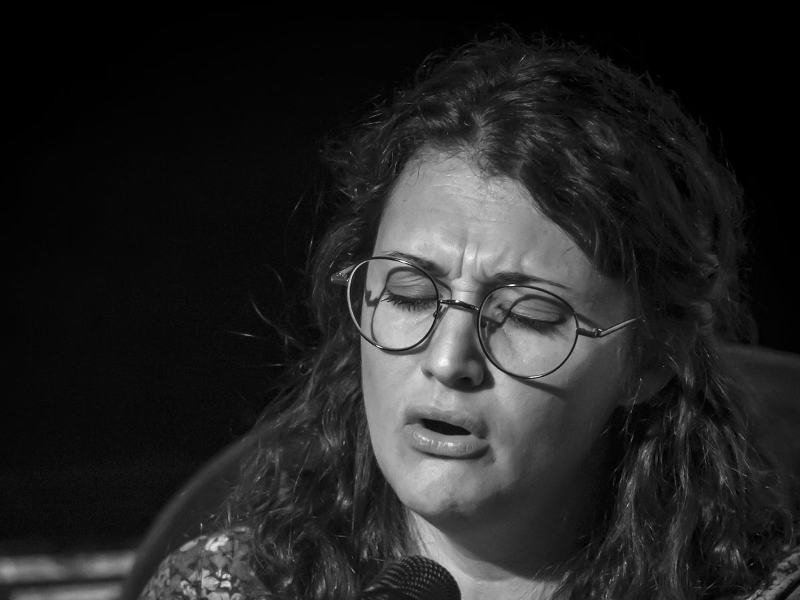
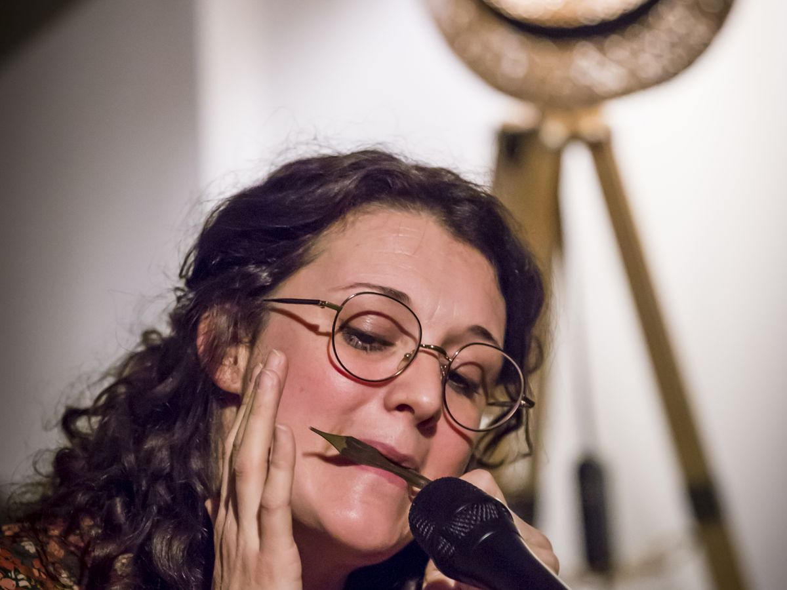
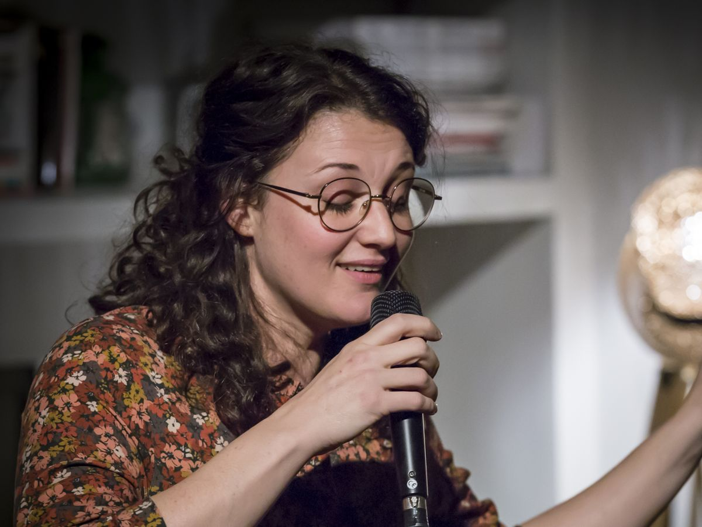
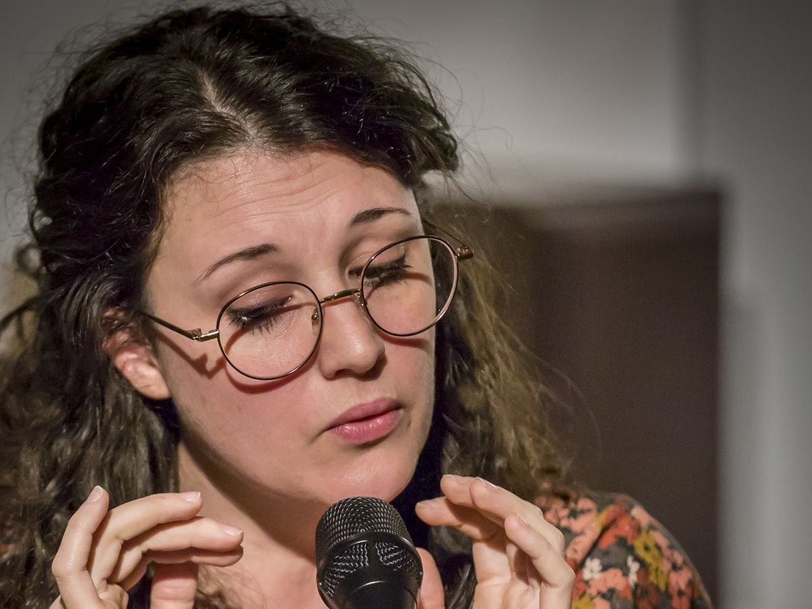

Amélie Zaroukian
comédienne · metteuse en scène · autrice · mezzo-soprano
Présentation

Comédienne · Metteuse en scène · Autrice · Mezzo-soprano
« Trouver la faille en moi pour l'offrir aux autres. »
C'est peut-être là que commence son théâtre. Dans cet endroit fragile où l'on cesse de vouloir maîtriser, où quelque chose échappe, se révèle, se partage.
Comédienne et metteuse en scène, Amélie Zaroukian aime explorer les contradictions humaines, les maladresses, les élans, les silences et les débordements. Elle cherche ce qui se cache derrière les mots, ce qui tremble sous les apparences, ce qui nous rend à la fois singuliers et profondément semblables.
Son parcours traverse les écritures classiques et contemporaines, les créations collectives, le théâtre jeune public et les formes intimistes. Autant de territoires où elle cultive le goût du jeu, du décalage et de l'inattendu.
L'humour n'est jamais très loin. Ni la tendresse. Ni cette part d'absurde qui raconte parfois mieux que les grands discours ce que nous sommes.
Artiste de plateau autant que de transmission, elle envisage le théâtre comme un espace de liberté, de rencontre et de transformation.
Jouer, non pas pour se cacher derrière un personnage, mais pour oser se dévoiler à travers lui.
Elle codirige le Collectif 22h13min avec Samuel Zaroukian.
En situation




Ses projets
- En chemin, Milo →Théâtre d'objets pour les tout-petits
- [Re]trace →Visites patrimoniales théâtralisées
- Soleil noir →Mezzo-soprano solo et scénographie